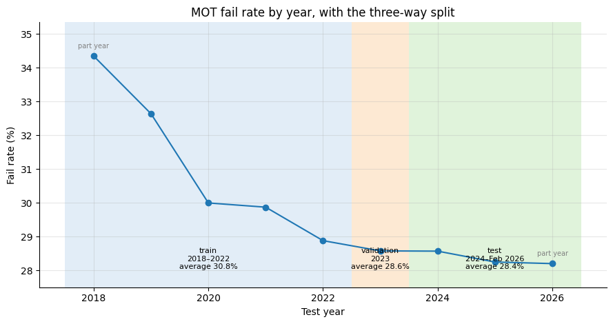
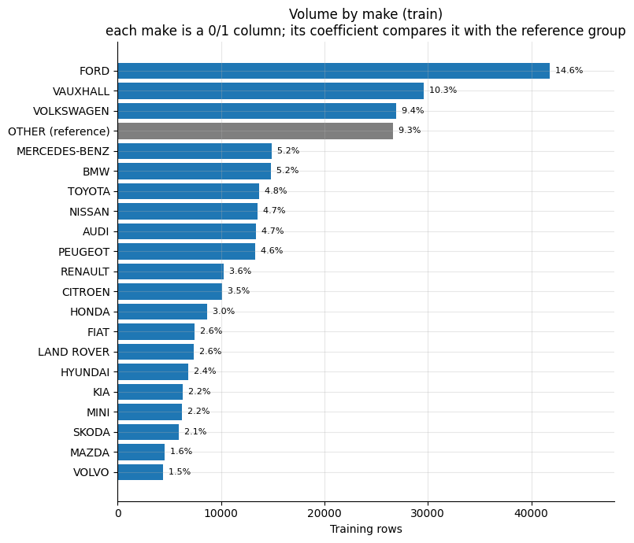
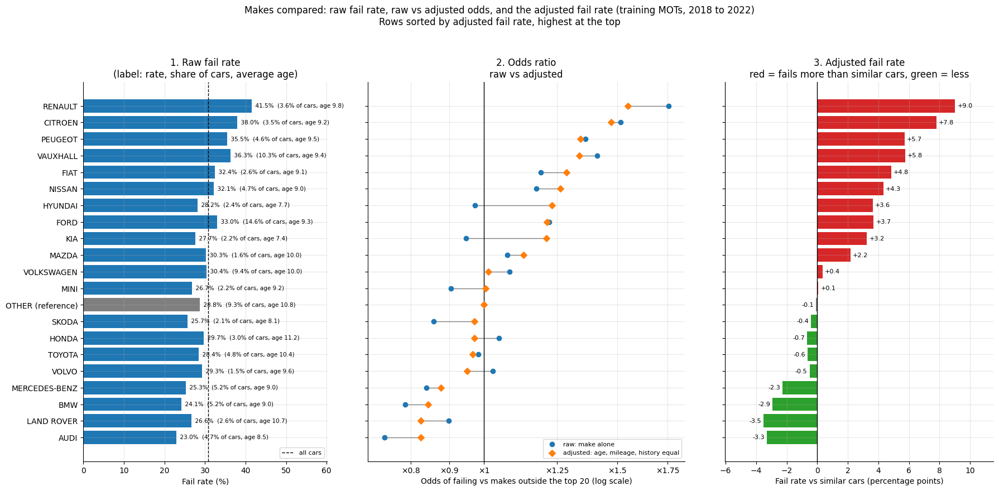

How the MOT failure model works
Enter a registration on Check your car and the site estimates how likely the car is to fail its next MOT. This page explains what that estimate is based on, how it was tested, and where it falls short.
Check your carAt a glance
What it predicts
The chance that a car or light van fails its next MOT, using only what is known before that test.
You see the result two ways. The headline compares the car with others of the same age, which places your car in one of three risk bands: Lower risk, Typical or Higher risk. Underneath is the estimated chance of failing, as a percentage.
What it looks at
Eight features, all taken from the car's public MOT record:
| Fact | Why it matters | Coefficient log-odds, per SD |
Odds ratio × odds, per SD |
|---|---|---|---|
| Failed MOTs in the last three years | The strongest signal: recent trouble tends to continue | +0.235 | × 1.26 |
| Mileage at its last MOT | More miles, more wear | +0.192 | × 1.21 |
| Failed MOTs in its whole history | A long-term track record, weighted less than recent fails | +0.146 | × 1.16 |
| Advisories at its last MOT | Warnings about parts that are wearing out | +0.137 | × 1.15 |
| Faults that failed it last time | A heavy fail suggests a car in worse shape | +0.100 | × 1.10 |
| Age at the next MOT | Cars wear with age | +0.096 | × 1.10 |
| Time since its last MOT | A long gap can mean a car that was off the road | +0.051 | × 1.05 |
| Make | Some makes fail more often than others of the same age and history | −0.193 (Audi) to +0.438 (Renault) per make, vs all other makes | × 0.82 to × 1.55 per make, vs all other makes |
How it learned
The data
The model was built from a sample of the DVSA's MOT records: 93,040 cars and vans and 495,116 MOTs between May 2018 and February 2026. Motorcycles were left out, as they fail for different reasons.
Each fact on its own
Before building the model, each fact was checked on its own: does the fail rate rise with it? Each panel splits the training cars into groups by one fact and shows how often each group failed its next MOT.


Learning from the past, tested on the future
The model learned from MOTs up to the end of 2022. It was then tested on 141,791 MOTs from 2024 to 2026 that it had never seen, in a single final check made after every design decision. That mirrors how the site is used: a model built on the past, predicting MOTs that haven't happened yet.
Cleaning up the records
Real records are messy. Retests a few days after a fail were counted once, not twice; mileage in kilometres was converted; unreadable odometers were handled separately; and the 2018 change to MOT rules meant only tests under the current rules are predicted.
How the facts relate to each other
Some facts naturally move together: older cars have usually had more MOTs, so more chances to fail. The grid shows how strongly each pair of facts rises and falls together, from −1 (one always rises as the other falls) through 0 (unrelated) to +1 (they always rise together).

Checking the facts don't repeat each other
If two facts carry the same information, the model can't tell which one deserves the credit, and its weights become unreliable. The variance inflation factor (VIF) measures how well each fact can be predicted from all the others: 1 means it brings completely new information, and values above 5 are a warning sign.
| Fact | VIF | Reading |
|---|---|---|
| Failed MOTs in its whole history | 3.33 | Some overlap, with recent fails and age |
| Failed MOTs in the last three years | 2.54 | Some overlap, with all-time fails |
| Age at the next MOT | 1.87 | Mild overlap |
| Faults that failed it last time | 1.48 | Mostly its own information |
| Mileage at its last MOT | 1.43 | Mostly its own information |
| Advisories at its last MOT | 1.13 | Almost entirely its own information |
| Time since its last MOT | 1.05 | Almost entirely its own information |
All seven are below 5, so every fact earns its place. Make isn't included: it's split into separate yes/no columns, one per make, which VIF can't measure fairly. Calculated on the training MOTs (2018 to 2022), for cars with an MOT history.
Why the percentages needed correcting
The MOT fail rate isn't fixed. In this data it fell from over 34% in 2018 to about 28% by 2024, with the steepest drop by 2020 and a slow decline since. A model learns the level of risk from the years it's trained on, so one trained on 2018 to 2022, when the average was 30.8%, expects too many fails in later years. This is known as drift.

The fix: a small correction fitted on a more recent year. Rather than retrain the whole model, its scores are adjusted using the 2023 results, a method called Platt scaling. It learns two numbers: one that shifts every prediction (here, down slightly, to match the lower fail rate) and one that stretches or squeezes them (here, almost unchanged). The ranking of cars stays exactly the same; only the percentages move.
Did it work? On the test MOTs from 2024 to 2026, which the correction never saw, the uncorrected model predicted an average fail rate of 31.2% against an actual 28.4%, too high by 2.8 points. After correction, it predicted 28.9%, within half a point.
Why a correction was enough. The model's ability to rank cars barely changed across the years (a ranking score of 0.70 in both 2023 and 2024 to 2026). What changed was the overall level of fails, not which cars fail. That's the kind of drift a simple correction can fix. If the ranking itself started to slip, the model would need retraining instead.
Why fail rates fell isn't something this data can say for certain. Possible reasons include newer cars making up more of the fleet, garages fixing more faults before the test, and changes in testing after the May 2018 rule changes and the 2020 pandemic, when many MOTs were postponed. As new results are published, the correction can be refitted on the latest year.
Getting the percentages right
A good ranking isn't enough when the site shows a percentage: if it says 30%, about 30% of such cars should fail. Fail rates have been falling, so a model trained on 2018 to 2022 predicts slightly too high for later years. A small correction, fitted on 2023 (Platt scaling), brings its predictions back in line.

| Test MOTs, 2024 to Feb 2026 | AUC ranking, 0.5 to 1 |
Average predicted % |
Actual % |
Average gap predicted − actual, points |
Typical group gap points, across ten groups |
Predicted range %, lowest to highest group |
|---|---|---|---|---|---|---|
| Model, before correction | 0.699 | 31.2 | 28.4 | +2.8 | 2.8 | 13 to 64 |
| Model, after correction | 0.699 | 28.9 | 28.4 | +0.5 | 1.4 | 12 to 61 |
| Age only, before correction | 0.648 | 32.9 | 28.4 | +4.5 | 4.5 | 15 to 48 |
| Age only, after correction | 0.648 | 29.5 | 28.4 | +1.1 | 1.5 | 13 to 44 |
The correction never changes the ranking, so each pair shares the same AUC. Once both are corrected, the model and age alone are similarly accurate on average, but the model spreads cars much further apart: its riskiest group averages about 61% against 44% for age alone. That's how it picks out genuinely high-risk cars, and why it ranks them better. The row in bold is the version the site uses.

How a car is compared with others its age
The band isn't based on a fixed percentage. Each car's predicted chance of failing is compared with cars of the same age: the lowest 40% are Lower risk, the highest 20% are Higher risk, and the rest are Typical. The cut-offs come from a recent year of MOTs (2023), set separately for each year of age.

Because the cut-offs were set on 2023 MOTs, the split in later years is close to, but not exactly, 40/40/20: on the test MOTs it was 42% Lower, 39% Typical and 18% Higher, as cars in later years were slightly lower risk overall.
How well it works
Ranking cars by risk
Pick one car that failed and one that passed: about 70% of the time, the model gave the failing car the higher score. Age alone manages about 65%. That's a real improvement, though not a crystal ball: many fails come from faults that appear suddenly.
Getting the percentages right
On the test MOTs, the model predicted an average fail rate of 28.9%; the real rate was 28.4%. Across every range of predictions, it stayed within a few points of reality.
The risk bands
How often cars in each band actually failed, on the test MOTs:
Higher-risk cars failed more than twice as often as lower-risk ones. But note that most higher-risk cars still passed: the band says a car is riskier than others like it, not that it will fail.
Consistent across cars
It was checked separately for every common make, each fuel type, each age group, and for first MOTs against cars with history: 36 groups in all, and it met the standard in every one.
What it says about makes
Compared with cars of the same age, mileage and MOT history, some makes fail more often than others. Among the 20 most common makes:
- Higher risk: Renault, Citroën, Peugeot and Vauxhall carry the highest odds of failing.
- Lower risk: Audi, Land Rover, BMW and Mercedes-Benz carry the lowest.
This isn't a verdict on how well the cars are built. Owners of premium makes are more likely to have their cars serviced before the MOT, and the MOT doesn't test things like engines or gearboxes, so a car can pass easily and still be unreliable.
How much data each make has
The model treats the 20 most common makes individually, and groups every other make together as a single reference group that the 20 are compared against. Each make's figures are only as reliable as the number of cars behind them.

- Three makes make up a third of the data. Ford (14.6%), Vauxhall (10.3%) and Volkswagen (9.4%) together account for over a third of all training MOTs, so their figures are the most precise.
- Even the smallest named makes have thousands of MOTs. Mazda (1.6%) and Volvo (1.5%) each still have over 4,000, enough for a reliable estimate, though less precise than Ford's.
- The reference group is large enough to compare against. All other makes together account for 9.3% of MOTs, about the size of Volkswagen, so every make's comparison rests on a solid baseline.
Makes outside the top 20 aren't ignored: the model still predicts for them, using their age, mileage and MOT history, with the reference group's make effect. It just doesn't estimate a separate effect for each, since many have too few cars to do so reliably.
What it says about makes
Some makes fail more often than others. But makes also differ in how old and well used their cars are, and age and mileage drive fails too. So each make is compared two ways: raw (its cars as they are) and adjusted (against cars of the same age, mileage and MOT history).

The adjusted picture
- Highest risk: Renault, Citroën, Peugeot and Vauxhall. Renault's odds of failing are about 1.55 times those of similar cars from other makes, roughly 9 percentage points higher.
- Lowest risk: Land Rover, Audi and BMW, with odds about 15 to 18% lower than similar cars, or roughly 3 percentage points. They're too close to rank: Audi's and Land Rover's figures differ by less than the uncertainty in either.
- Ford sits almost exactly where its raw figures suggest. With a seventh of all cars, it's close to the average of the whole fleet, so adjusting changes little.
When the raw view gets it backwards
For some makes, adjusting reverses the verdict, because their cars are unusually young or old:
- Kia and Hyundai look better than average, raw, but are worse adjusted. They have the youngest cars (about 7.5 years on average), and young cars rarely fail. Compared with cars of the same age, they fail about 3 to 4 points more often.
- Honda and Volvo look worse than average, raw, but are better adjusted. Honda has the oldest cars (over 11 years on average), so a higher raw fail rate is expected. For their age, they do slightly better than similar cars.
It's the same trap as comparing diesel and petrol cars without allowing for age: a straight comparison mostly measures how old each group's cars are.
The adjusted effect captures everything about a make that the model doesn't measure separately, including how its cars are serviced and who owns them, not just how they're built. Owners of premium makes, for example, are more likely to have their cars serviced before the MOT. And the MOT doesn't test engines or gearboxes, so a make can do well here and still be unreliable.
Why are some makes harder to predict?
A car's history only helps if its faults give warning first, usually as advisories at the previous MOT. So for three groups of makes, this compares how often cars failed their next MOT depending on how many advisories they had at the last one.

What it shows
- French makes and Vauxhall fail most often without warning. About a third of those with no advisories at all at their last MOT failed the next one, against about a quarter for Japanese makes and a fifth for premium makes. Their faults less often show up as advisories first, so a car's history gives less notice, which fits their lower ranking scores.
- Japanese makes' advisories turn into fails most reliably. Their fail rate rises the most between no advisories and three or more (about 20 points). One plausible reason is that their typical advisories, such as corrosion, are costly to fix and tend to be left until they fail. The difference from French makes and Vauxhall is small, though, and corrosion hasn't been tested separately.
- Premium makes' advisories matter least. Their line is the lowest and rises the least (about 17 points), consistent with advisories being dealt with at a service before the next MOT.
- Make by make, the differences are small. On its own, the advisory count ranks fails almost equally well across all twelve makes (0.58 to 0.61), and the groups don't separate cleanly: Mercedes-Benz scores second-highest, while BMW and Audi are near the bottom. The clearest difference between the groups is how often cars fail with no warning, not how predictive their advisories are.
These are raw rates, not adjusted for age or mileage, so part of the difference between groups may come from their cars being older or more heavily used. Possible causes, such as build quality, owners' servicing habits or the type of faults each make develops, can't be separated with MOT data alone.
What it can't do
- Predict sudden faults, like a blown bulb, a damaged tyre or a stone chip.
- See the car's current mileage: it uses the reading from the last MOT.
- Spot mileage that's been wound back, if it still looks higher than last time.
- Judge classic cars well: very old cars tested occasionally don't behave like everyday cars.
- Replace an inspection. It's an estimate for interest, not advice.
How it runs on this site
When you enter a registration, the site fetches that car's MOT history live from the DVSA, works out the eight facts using exactly the same rules the model was built with, and returns the result. The live version was checked against the original on 50 real cars and gave identical answers for every one.
Registrations are looked up as you check them. Basic technical logs are kept for a few days so faults can be fixed; nothing is used to identify you.
Keeping it honest
Cars and MOT results change over time, and fail rates have been falling. As new MOT results are published, the model's past predictions can be checked against what actually happened, and it will be recalibrated or retrained when it drifts.